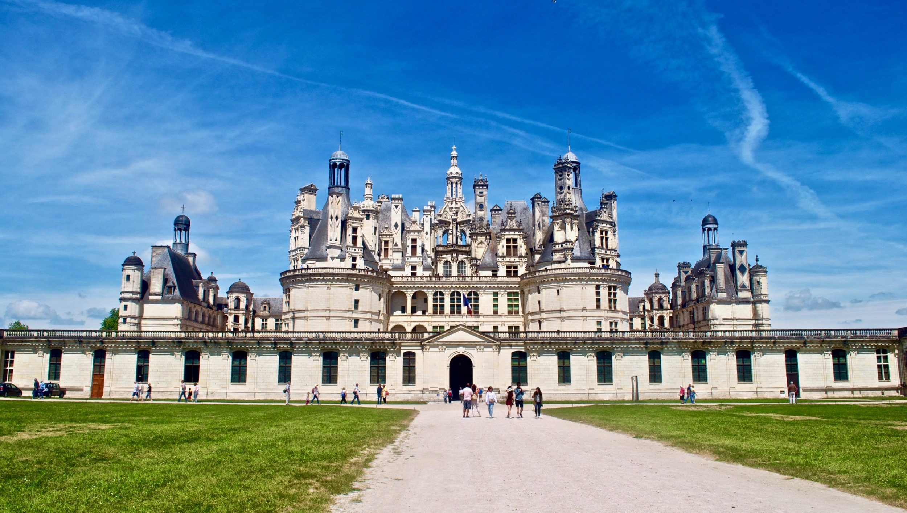

The Loire Valley is referred to as the Cradle of the French and the Garden of France due to the abundance of vineyards, fruit orchards (such as cherries), and artichoke, and asparagus fields, which line the banks of the river.[3] Notable for its historic towns, architecture, and wines, the valley has been inhabited since the Middle Palaeolithic period.[2] In 2000, UNESCO added the central part of the Loire River valley to its list of World Heritage Sites.
